Time Series Analysis by State Space Methods statespace¶
statsmodels.tsa.statespace contains classes and functions that are
useful for time series analysis using state space methods.
A general state space model is of the form
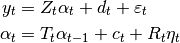
where  refers to the observation vector at time 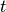,
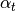 refers to the (unobserved) state vector at time
, and where the irregular components are defined as
refers to the observation vector at time 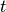,
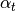 refers to the (unobserved) state vector at time
, and where the irregular components are defined as
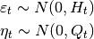
The remaining variables ( ) in the
equations are matrices describing the process. Their variable names and
dimensions are as follows
) in the
equations are matrices describing the process. Their variable names and
dimensions are as follows
Z : design 
d : obs_intercept 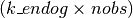
H : obs_cov 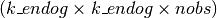
T : transition 
c : state_intercept 
R : selection 
Q : state_cov 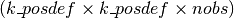
In the case that one of the matrices is time-invariant (so that, for
example, 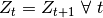), its last dimension may
be of size  rather than size nobs.
rather than size nobs.
This generic form encapsulates many of the most popular linear time series models (see below) and is very flexible, allowing estimation with missing observations, forecasting, impulse response functions, and much more.
Example: AR(2) model¶
An autoregressive model is a good introductory example to putting models in state space form. Recall that an AR(2) model is often written as:
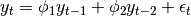
This can be put into state space form in the following way:
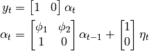
Where
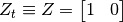
and
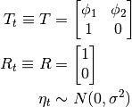
There are three unknown parameters in this model: 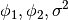.
Models and Estimation¶
The following are the main estimation classes, which can be accessed through statsmodels.tsa.statespace.api and their result classes.
Seasonal Autoregressive Integrated Moving-Average with eXogenous regressors (SARIMAX)¶
The SARIMAX class is an example of a fully fledged model created using the statespace backend for estimation. SARIMAX can be used very similarly to tsa models, but works on a wider range of models by adding the estimation of additive and multiplicative seasonal effects, as well as arbitrary trend polynomials.
sarimax.SARIMAX(endog[, exog, order, ...]) |
Seasonal AutoRegressive Integrated Moving Average with eXogenous regressors |
sarimax.SARIMAXResults(model, params, ...[, ...]) |
Class to hold results from fitting an SARIMAX model. |
For an example of the use of this model, see the SARIMAX example notebook or the very brief code snippet below:
# Load the statsmodels api
import statsmodels.api as sm
# Load your dataset
endog = pd.read_csv('your/dataset/here.csv')
# We could fit an AR(2) model, described above
mod_ar2 = sm.tsa.SARIMAX(endog, order=(2,0,0))
# Note that mod_ar2 is an instance of the SARIMAX class
# Fit the model via maximum likelihood
res_ar2 = mod_ar2.fit()
# Note that res_ar2 is an instance of the SARIMAXResults class
# Show the summary of results
print(res_ar2.summary())
# We could also fit a more complicated model with seasonal components.
# As an example, here is an SARIMA(1,1,1) x (0,1,1,4):
mod_sarimax = sm.tsa.SARIMAX(endog, order=(1,1,1),
seasonal_order=(0,1,1,4))
res_sarimax = mod_sarimax.fit()
# Show the summary of results
print(res_sarimax.summary())
The results object has many of the attributes and methods you would expect from other Statsmodels results objects, including standard errors, z-statistics, and prediction / forecasting.
Behind the scenes, the SARIMAX model creates the design and transition matrices (and sometimes some of the other matrices) based on the model specification.
Unobserved Components¶
The UnobservedComponents class is another example of a statespace model.
structural.UnobservedComponents(endog[, ...]) |
Univariate unobserved components time series model |
structural.UnobservedComponentsResults(...) |
Class to hold results from fitting an unobserved components model. |
For examples of the use of this model, see the example notebook or a notebook on using the unobserved components model to decompose a time series into a trend and cycle or the very brief code snippet below:
# Load the statsmodels api
import statsmodels.api as sm
# Load your dataset
endog = pd.read_csv('your/dataset/here.csv')
# Fit a local level model
mod_ll = sm.tsa.UnobservedComponents(endog, 'local level')
# Note that mod_ll is an instance of the UnobservedComponents class
# Fit the model via maximum likelihood
res_ll = mod_ll.fit()
# Note that res_ll is an instance of the UnobservedComponentsResults class
# Show the summary of results
print(res_ll.summary())
# Show a plot of the estimated level and trend component series
fig_ll = res_ll.plot_components()
# We could further add a damped stochastic cycle as follows
mod_cycle = sm.tsa.UnobservedComponents(endog, 'local level', cycle=True,
damped_cycle=true,
stochastic_cycle=True)
res_cycle = mod_cycle.fit()
# Show the summary of results
print(res_cycle.summary())
# Show a plot of the estimated level, trend, and cycle component series
fig_cycle = res_cycle.plot_components()
Vector Autoregressive Moving-Average with eXogenous regressors (VARMAX)¶
The VARMAX class is an example of a multivariate statespace model.
varmax.VARMAX(endog[, exog, order, trend, ...]) |
Vector Autoregressive Moving Average with eXogenous regressors model |
varmax.VARMAXResults(model, params, ...[, ...]) |
Class to hold results from fitting an VARMAX model. |
For an example of the use of this model, see the VARMAX example notebook or the very brief code snippet below:
# Load the statsmodels api
import statsmodels.api as sm
# Load your (multivariate) dataset
endog = pd.read_csv('your/dataset/here.csv')
# Fit a local level model
mod_var1 = sm.tsa.VARMAX(endog, order=(1,0))
# Note that mod_var1 is an instance of the VARMAX class
# Fit the model via maximum likelihood
res_var1 = mod_var1.fit()
# Note that res_var1 is an instance of the VARMAXResults class
# Show the summary of results
print(res_var1.summary())
# Construct impulse responses
irfs = res_ll.impulse_responses(steps=10)
Dynamic Factor Models¶
The DynamicFactor class is another example of a multivariate statespace model.
dynamic_factor.DynamicFactor(endog, ...[, ...]) |
Dynamic factor model |
dynamic_factor.DynamicFactorResults(model, ...) |
Class to hold results from fitting an DynamicFactor model. |
For an example of the use of this model, see the Dynamic Factor example notebook or the very brief code snippet below:
# Load the statsmodels api
import statsmodels.api as sm
# Load your dataset
endog = pd.read_csv('your/dataset/here.csv')
# Fit a local level model
mod_dfm = sm.tsa.DynamicFactor(endog, k_factors=1, factor_order=2)
# Note that mod_dfm is an instance of the DynamicFactor class
# Fit the model via maximum likelihood
res_dfm = mod_dfm.fit()
# Note that res_dfm is an instance of the DynamicFactorResults class
# Show the summary of results
print(res_ll.summary())
# Show a plot of the r^2 values from regressions of
# individual estimated factors on endogenous variables.
fig_dfm = res_ll.plot_coefficients_of_determination()
Custom state space models¶
The true power of the state space model is to allow the creation and estimation of custom models. Usually that is done by extending the following two classes, which bundle all of state space representation, Kalman filtering, and maximum likelihood fitting functionality for estimation and results output.
mlemodel.MLEModel(endog, k_states[, exog, ...]) |
State space model for maximum likelihood estimation |
mlemodel.MLEResults(model, params, results) |
Class to hold results from fitting a state space model. |
For a basic example demonstrating creating and estimating a custom state space model, see the Local Linear Trend example notebook. For a more sophisticated example, see the source code for the SARIMAX and SARIMAXResults classes, which are built by extending MLEModel and MLEResults.
In simple cases, the model can be constructed entirely using the MLEModel class. For example, the AR(2) model from above could be constructed and estimated using only the following code:
import numpy as np
from scipy.signal import lfilter
import statsmodels.api as sm
# True model parameters
nobs = int(1e3)
true_phi = np.r_[0.5, -0.2]
true_sigma = 1**0.5
# Simulate a time series
np.random.seed(1234)
disturbances = np.random.normal(0, true_sigma, size=(nobs,))
endog = lfilter([1], np.r_[1, -true_phi], disturbances)
# Construct the model
class AR2(sm.tsa.statespace.MLEModel):
def __init__(self, endog):
# Initialize the state space model
super(AR2, self).__init__(endog, k_states=2, k_posdef=1,
initialization='stationary')
# Setup the fixed components of the state space representation
self['design'] = [1, 0]
self['transition'] = [[0, 0],
[1, 0]]
self['selection', 0, 0] = 1
# Describe how parameters enter the model
def update(self, params, transformed=True, **kwargs):
params = super(AR2, self).update(params, transformed, **kwargs)
self['transition', 0, :] = params[:2]
self['state_cov', 0, 0] = params[2]
# Specify start parameters and parameter names
@property
def start_params(self):
return [0,0,1] # these are very simple
# Create and fit the model
mod = AR2(endog)
res = mod.fit()
print(res.summary())
This results in the following summary table:
Statespace Model Results
==============================================================================
Dep. Variable: y No. Observations: 1000
Model: AR2 Log Likelihood -1389.437
Date: Wed, 26 Oct 2016 AIC 2784.874
Time: 00:42:03 BIC 2799.598
Sample: 0 HQIC 2790.470
- 1000
Covariance Type: opg
==============================================================================
coef std err z P>|z| [0.025 0.975]
------------------------------------------------------------------------------
param.0 0.4395 0.030 14.730 0.000 0.381 0.498
param.1 -0.2055 0.032 -6.523 0.000 -0.267 -0.144
param.2 0.9425 0.042 22.413 0.000 0.860 1.025
===================================================================================
Ljung-Box (Q): 24.25 Jarque-Bera (JB): 0.22
Prob(Q): 0.98 Prob(JB): 0.90
Heteroskedasticity (H): 1.05 Skew: -0.04
Prob(H) (two-sided): 0.66 Kurtosis: 3.02
===================================================================================
Warnings:
[1] Covariance matrix calculated using the outer product of gradients (complex-step).
The results object has many of the attributes and methods you would expect from other Statsmodels results objects, including standard errors, z-statistics, and prediction / forecasting.
More advanced usage is possible, including specifying parameter transformations, and specifing names for parameters for a more informative output summary.
State space representation and Kalman filtering¶
While creation of custom models will almost always be done by extending MLEModel and MLEResults, it can be useful to understand the superstructure behind those classes.
Maximum likelihood estimation requires evaluating the likelihood function of the model, and for models in state space form the likelihood function is evaluted as a byproduct of running the Kalman filter.
There are two classes used by MLEModel that facilitate specification of the state space model and Kalman filtering: Representation and KalmanFilter.
The Representation class is the piece where the state space model representation is defined. In simple terms, it holds the state space matrices (design, obs_intercept, etc.; see the introduction to state space models, above) and allows their manipulation.
FrozenRepresentation is the most basic results-type class, in that it takes a “snapshot” of the state space representation at any given time. See the class documentation for the full list of available attributes.
representation.Representation(k_endog, k_states) |
State space representation of a time series process |
representation.FrozenRepresentation(model) |
Frozen Statespace Model |
The KalmanFilter class is a subclass of Representation that provides
filtering capabilities. Once the state space representation matrices have been
constructed, the filter
method can be called, producing a FilterResults instance; FilterResults is
a subclass of FrozenRepresentation.
The FilterResults class not only holds a frozen representation of the state
space model (the design, transition, etc. matrices, as well as model
dimensions, etc.) but it also holds the filtering output, including the
filtered state and
loglikelihood (see the class documentation for the full list of available
results). It also provides a
predict method, which allows
in-sample prediction or out-of-sample forecasting. A similar method,
predict, provides
additional prediction or forecasting results, including confidence intervals.
kalman_filter.KalmanFilter(k_endog, k_states) |
State space representation of a time series process, with Kalman filter |
kalman_filter.FilterResults(model) |
Results from applying the Kalman filter to a state space model. |
The KalmanSmoother class is a subclass of KalmanFilter that provides
smoothing capabilities. Once the state space representation matrices have been
constructed, the filter
method can be called, producing a SmootherResults instance; SmootherResults
is a subclass of FilterResults.
The SmootherResults class holds all the output from FilterResults, but
also includes smoothing output, including the
smoothed state and
loglikelihood (see the class documentation for the full list of available
results). Whereas “filtered” output at time t refers to estimates conditional
on observations up through time t, “smoothed” output refers to estimates
conditional on the entire set of observations in the dataset.
kalman_smoother.KalmanSmoother(k_endog, k_states) |
State space representation of a time series process, with Kalman filter and smoother. |
kalman_smoother.SmootherResults(model) |
Results from applying the Kalman smoother and/or filter to a state space model. |
Statespace diagnostics¶
Three diagnostic tests are available after estimation of any statespace model, whether built in or custom, to help assess whether the model conforms to the underlying statistical assumptions. These tests are:
A number of standard plots of regression residuals are available for the same
purpose. These can be produced using the command
plot_diagnostics.
Statespace Tools¶
There are a variety of tools used for state space modeling or by the SARIMAX class:
tools.companion_matrix(polynomial) |
Create a companion matrix |
tools.diff(series[, k_diff, ...]) |
Difference a series simply and/or seasonally along the zero-th axis. |
tools.is_invertible(polynomial[, threshold]) |
Determine if a polynomial is invertible. |
tools.constrain_stationary_univariate(...) |
Transform unconstrained parameters used by the optimizer to constrained |
tools.unconstrain_stationary_univariate(...) |
Transform constrained parameters used in likelihood evaluation |
tools.constrain_stationary_multivariate(...) |
Transform unconstrained parameters used by the optimizer to constrained parameters used in likelihood evaluation for a vector autoregression. |
tools.unconstrain_stationary_multivariate(...) |
Transform constrained parameters used in likelihood evaluation |
tools.validate_matrix_shape(name, shape, ...) |
Validate the shape of a possibly time-varying matrix, or raise an exception |
tools.validate_vector_shape(name, shape, ...) |
Validate the shape of a possibly time-varying vector, or raise an exception |